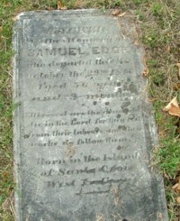

by
Stefan Bielinski
Samuel Edge was born on the island of St. Croix in the West Indies about 1790. By the early 1800s, he was living in Albany and was a part of the Free Black community of Arbor Hill.
The first published city directory in 1813 identified him as a sweep in the office at 3 Chapel Street. Perhaps he also lived in the building. By that time, he had married Caty Arnold (Eldrid) at the Albany Lutheran church.
Subsequent city directories gave his occupation as "shoemaker" and his address at 3 Chapel, 21 North Pearl, and, in 1830, at 6 Orange Street. Mostly, he was further identified as a "free person of color" in the directories.
Samuel Edge died in October 1846 and was buried in the African Methodist Episcopal Church plot in the municipal cemetery. Later, his stone was relocated to Albany Rural Cemetery. Letters of Administration were issued on his estate on November 30, 1846.
Born in the West Indies, he probably came to the United States as a slave. Samuel Edge lived in the city for almost five decades, was identified with a trade, and was a prominent member of the Afro-Albanian community.

notes
 Sources: The life of Samuel Edge is CAP biography number 2453. This sketch is derived chiefly from family and community-based resources.
Sources: The life of Samuel Edge is CAP biography number 2453. This sketch is derived chiefly from family and community-based resources.
Gravestone of Samuel Edge photographed by Stefan Bielinski at Albany Rural Cemetery in November 2004.
first posted: 11/10/04